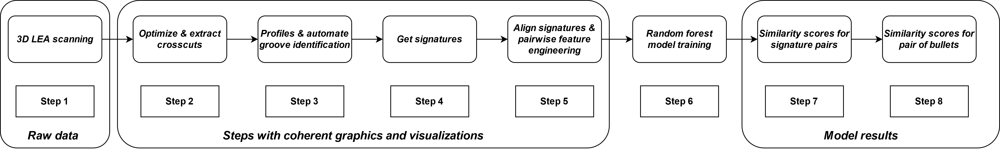
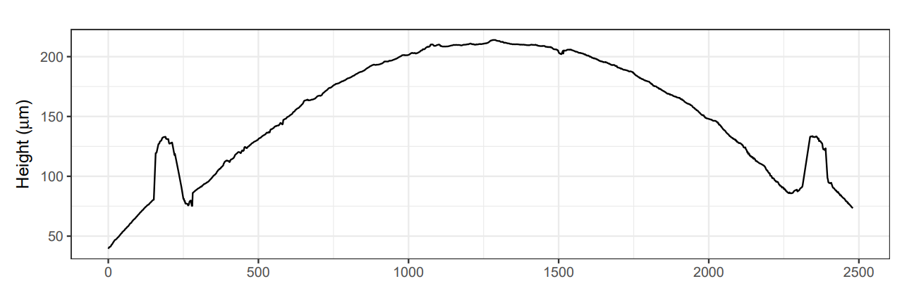
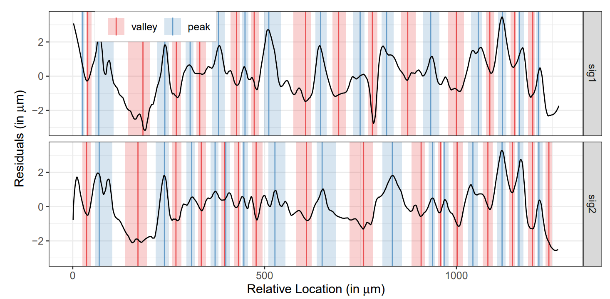
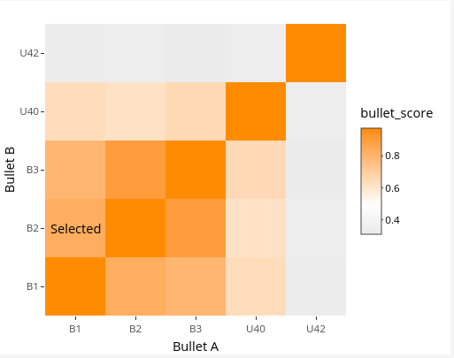

This website provides and introduction to automated scores, visualizations and decision-making framework used in algorithmic forensic bullet comparisons. We take you through a series of visuals explaining the key parts of the automated comparison procedure that facilitates decision-making based on scores.
Bullets and Lands
Bullet after it is fired from a gun
Bullet collected after it was fired from a gun. The LEAs, GEAs and the location where LEA scans are taken can be seen here. Unannotated source: NIST
Close-up of bullet under a comparison microscope
Image depicts what firearms examiners see in a comparison microscope. These are two bullets aligned one over the other. The black vertical line separates between two bullets. The striation marks are visible on both the LEAs and the firearm examiners tries to align them by rotating one of the bullets till they seem to align correctly. If two LEAs are aligned correctly, the examiner visually makes a comparison and deduction on whether the two LEAs seem to match. If they conclude its a match, they quickly make synchronized in-phase rotations of both bullets to compare the other 5 pairs too.
Land engraved area (LEA)
The image shows a rendering of the scan of the bullet land engraved area (LEA) which includes the grooves on either side and a break-off region at the bottom. The break-off region shows the flaking off of parts of the bullet, which happens after the firing process of the gun. The process initiates when the firing pin hits the bottom, and the breaking off at the bottom can happen any time between then and the bullet moving through the barrel of the gun and hitting its target. The light silver-grey line shows the region from which cross-cuts are extracted for automatic matching of the bullet lands.
Scans-to-scores
Bullet matching pipeline

The different steps in the bullet matching pipeline for automatic matching of bullets is presented here. The data flow starts with the scanning process where the LEAs are scanned, before proceeding to model development and information extraction, and then model results which include pairwise land-to-land scores, and bullet level scores.
Scanning using comparison microscope
Comparison Microscope (left). Each bullet is placed on a separate stage and can be individually rotated; the eyepiece combines the two views (right) to facilitate comparisons.
Extracted profiles from cross-sections of LEA

The crosscut values shown are extracted at a fixed distance from the bottom of the land. These profiles therefore represent the scrapings on the land surface but at a fixed height from the bottom.
Profiles with marked grooves
The image shows grooves marked in blue on the profiles. The identification of grooves on the LEA scan is done using an automatic groove identification algorithm. The part of the profile between the two grooves is used for analysis. The green part shows a smoothed marking that is used in signatures.
Signature
The marking shown here is the signature of the land which is extracted by further processing the profiles by removing the trend of the cross-section but still preserving the striations observed on the land surface. These land signatures are used for comparing two lands
Aligned signatures
The algorithmic alignment of two signatures extracted are shown here. The markings are aligned by using the regions of maximum agreement which is computed by maximizing the cross-correlation between them
Peak and valley matching of striations

The figure depicts automatically calculated peaks (blue) and valleys (red), and their width based on signatures extracted from a land engraved area. Two different signatures can be visually compared to a certain extent based on how well the peaks and valleys seem to align. The automatic calculation metric is based on Consecutively Matching Striae (CMS) computations where the identification of these peaks, valleys and their widths use a well-quantified procedure. This is different from the visual comparison made by examiners where the peaks are counted based on intuitive recognition and identification
Land-to-land scores
The land-to-land random forest score for 36 comparisons is shown here as a heatmap. The diagonal shows 6 pairs of in-phase comparisons. In-phase here means that, for two bullets fired from the same barrel, each of the 6 LEAs from one bullet will only have one other LEA on the second bullet to which it is supposed to match. Therefore, only 6 pairs from the 36 pair-wise comparisons will have higher match scores than the rest. This is an immediate extension of the firing phenomenon of the gun, where a barrel has 6 Lands that engrave 6 LEAs on the bullet, therefore, for two bullets fired from the same gun, each bullet will only have 1 LEA that passes through a specific land of the barrel. Thus, there can only be 6 pairs of LEAs owing to the 6 lands of the barrel, and these 6 pairs are supposed to be represented on the diagonal of the given heatmap.
Bullet-to-bullet scores

Heatmap showing the scores of 5 different bullets compared with each other making 25 different combinations. The diagonal of this heatmap shows the score for a bullet when compared with itself which will alway be 1. The rest of the comparisons show the statistical score for two different bullets that are being compared. These bullet-to-bullet scores incorporate the random forest scores of all in-phase pairs of land-to-land matches for two bullets under consideration. Uncertainty is embedded in the heatmap through the presence of multiple and similar such scores, due relative inference of the score of the comparison under consideration, with the scores of all other comparisons. There is also some ambiguity introduced due to the scales and color gradients